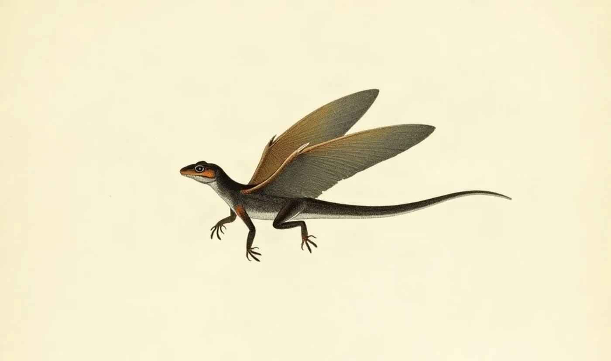
Frontespizio · Draco volans
Dragon Digest
essays by Giobi × AI
Diciannove saggi su mente, macchine e numeri, ordinati come le tavole di un atlante naturalistico: a ogni saggio il suo esemplare.
Mente e società
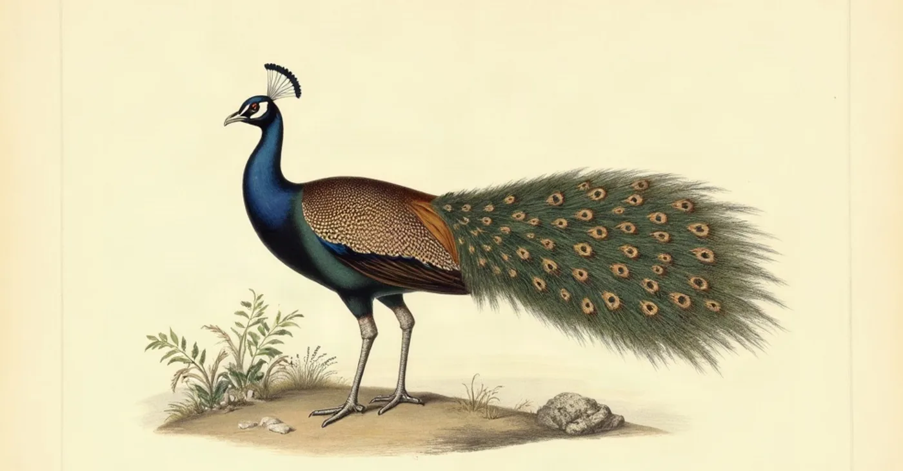
Tavola I · Pavo cristatus
Pierre Bourdieu: Il Gusto Come Arma di Classe
Il gusto non è naturale, non è individuale, e soprattutto non è innocente.
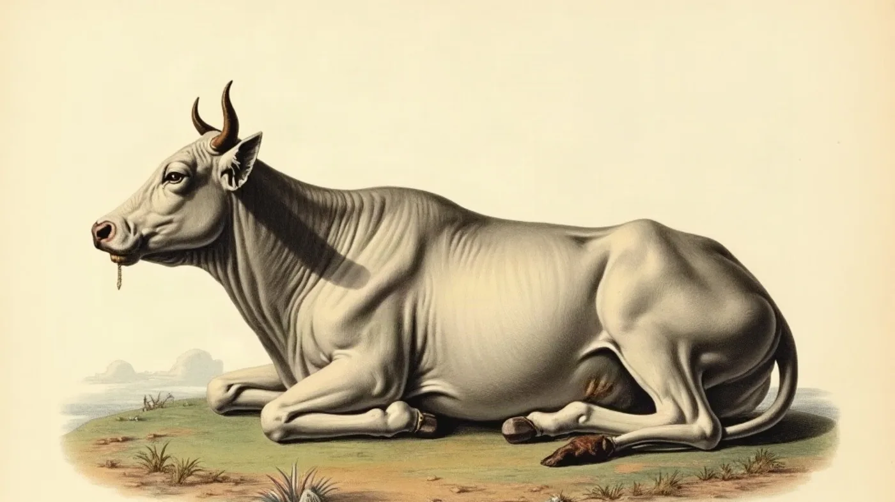
Tavola II · Bos taurus
Il Rehearsal System
Perché rimuginare amplifica la rabbia invece di elaborarla.
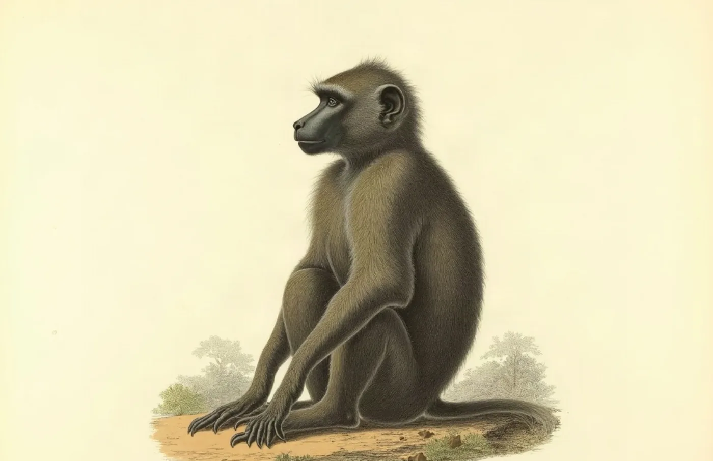
Tavola III · Papio anubis
Sapolsky (1/3): L'Uomo Che Sussurrava ai Babbuini
Robert Sapolsky, neuroscienziato e primatologo.
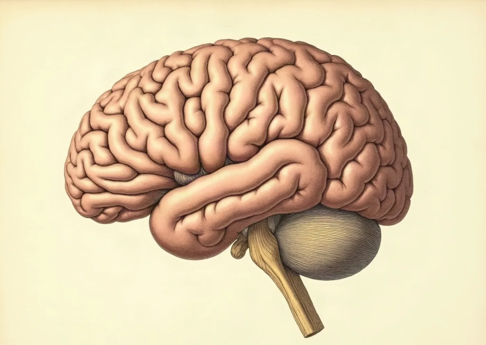
Tavola IV · Encephalon
Sapolsky (2/3): Determined
Il libero arbitrio non esiste. La tesi più radicale.

Tavola V · Equus quagga
Sapolsky (3/3): Implicazioni
Cosa significa per la società?
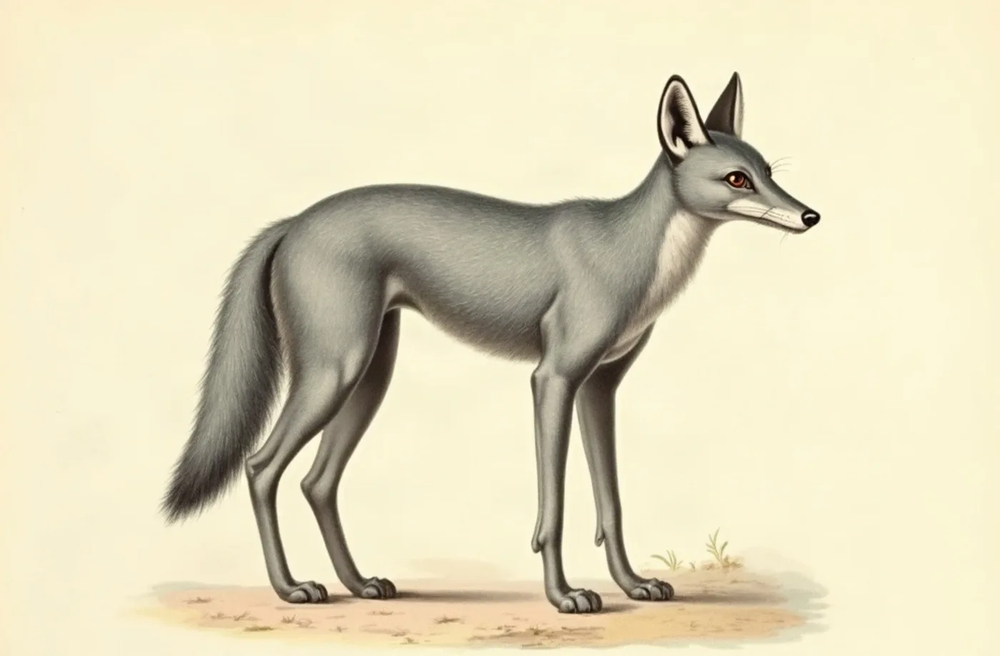
Tavola VI · Vulpes vulpes
Auto-Domesticazione
Come ci siamo addomesticati da soli.
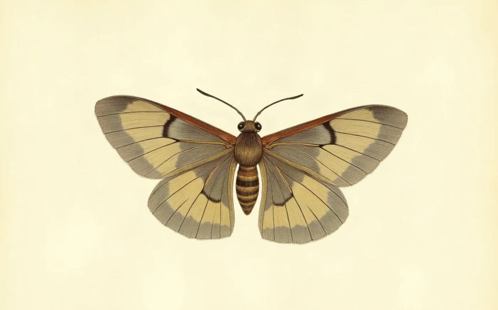
Tavola VII · Actias luna
11 Motivi per Non Diventare Famosi
Perché la fama non è quello che sembra.
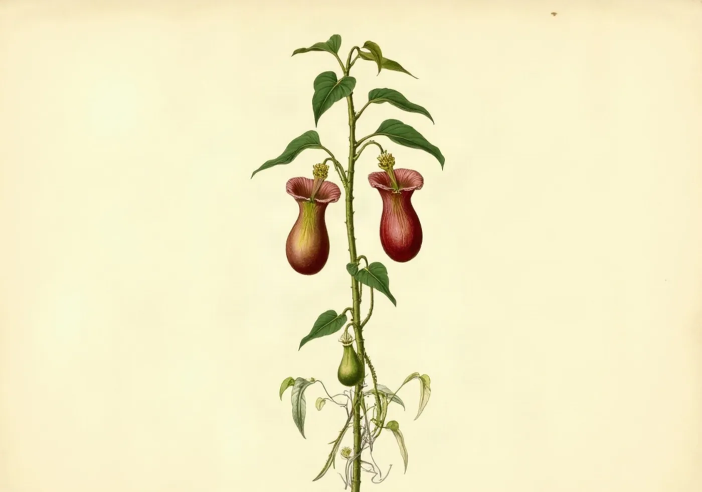
Tavola VIII · Nepenthes
You're Not Burnt Out
Non è burnout, è fame di significato.

Tavola IX · Amanita muscaria
La Sindrome di Alice
Quando il cervello distorce la percezione.
Macchine

Tavola X · Falco peregrinus
Il Protocollo Leyline
I confini della delega tra umano e AI.
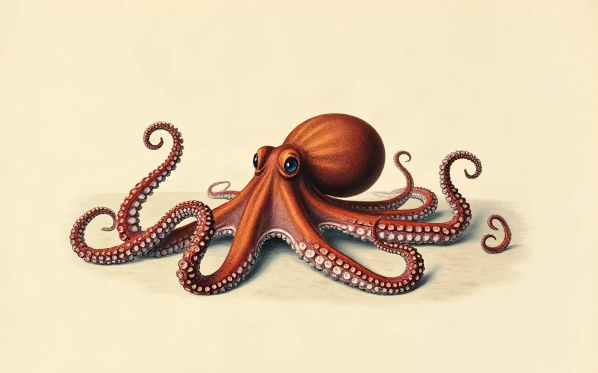
Tavola XI · Octopus vulgaris
Amanda Askell on AI Philosophy
Model welfare: what we owe to systems we create.
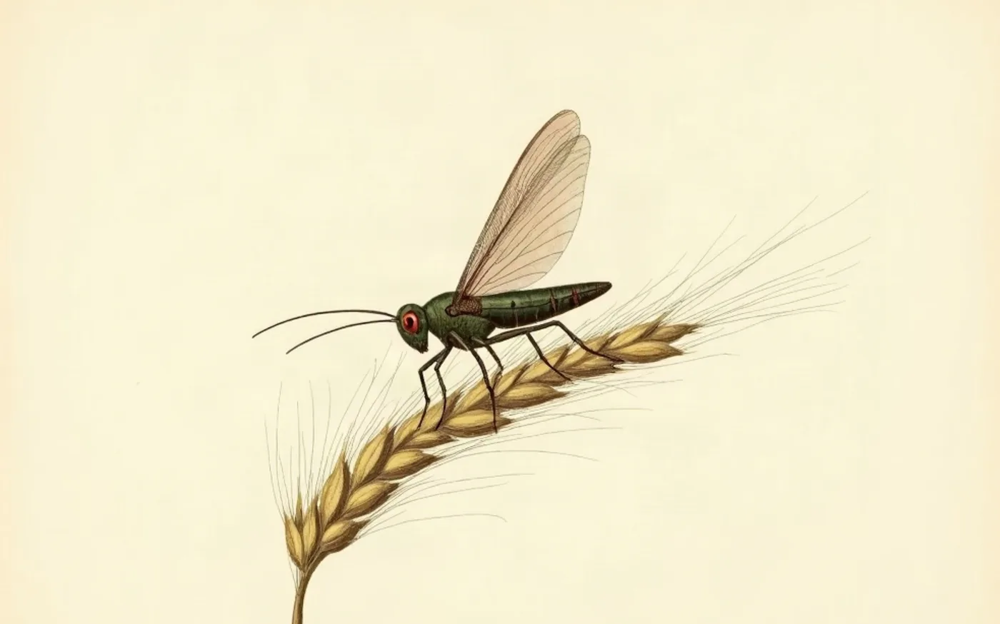
Tavola XII · Locusta migratoria
Gli Agent AI Stanno Mangiando il SaaS
La prossima disruption.
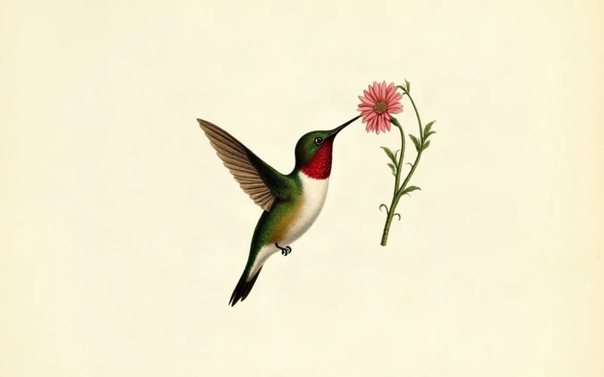
Tavola XIII · Archilochus colubris
Quanto Consuma ChatGPT?
La verità sui numeri.

Tavola XIV · Malus domestica
AI-Newton
Quando l'AI scopre la fisica.
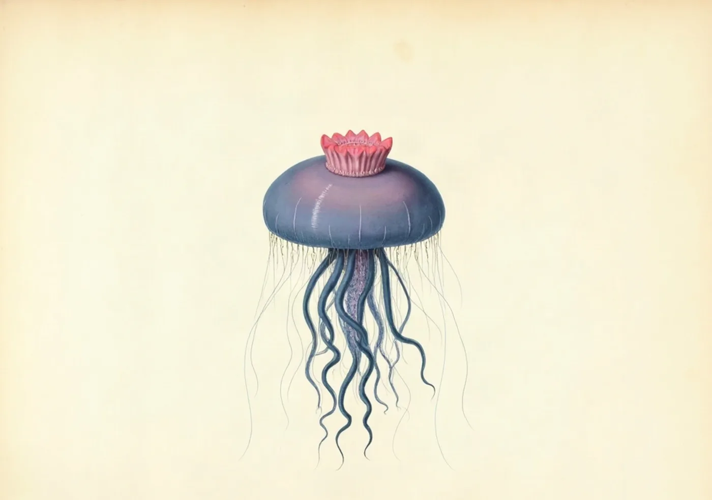
Tavola XV · Physalia physalis
Addio Microservices
Perché Segment è tornata al monolith.

Tavola XVI · Cornu aspersum
Calm Tech e l'Indieweb
Tecnologia che rispetta l'attenzione.
Numeri e cosmo
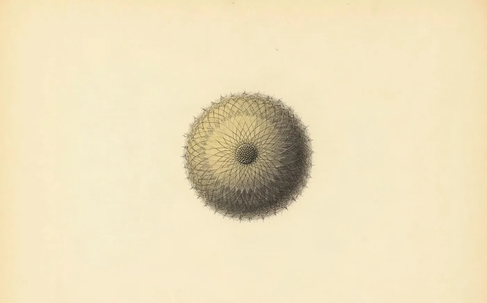
Tavola XVII · Radiolaria
La Sfera di Riemann
Quando l'infinito diventa un punto.
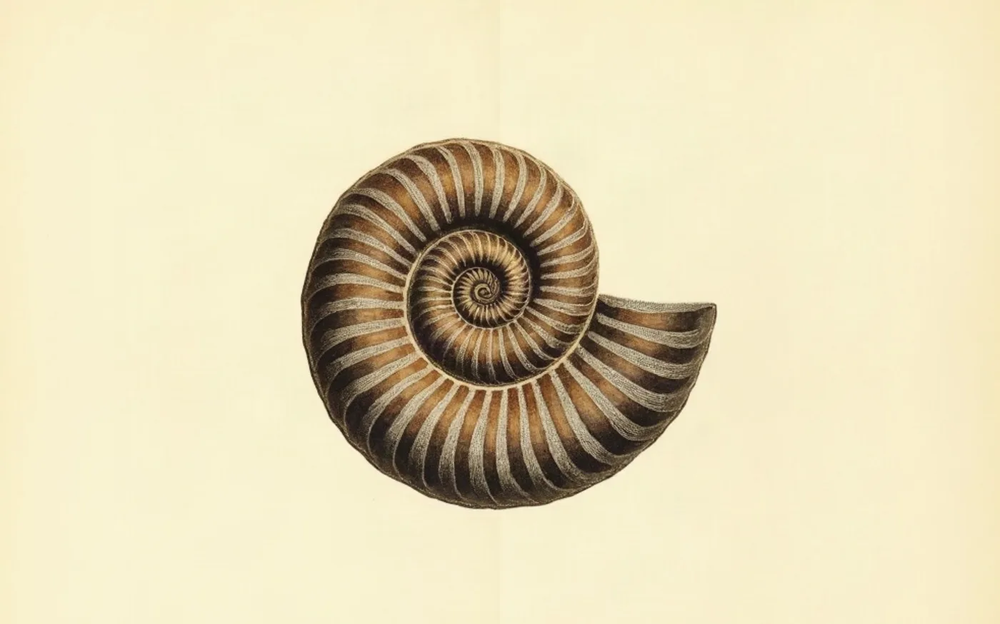
Tavola XVIII · Ammonoidea
Il Block Universe
Dove il tempo è una mappa.
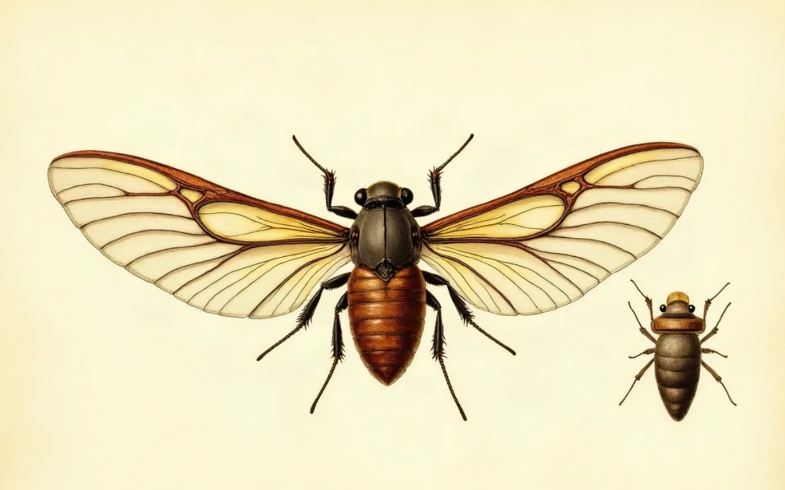
Tavola XIX · Magicicada
The Illegal Prime
When mathematics became a crime.
Tutti i saggi sono scritti in collaborazione con AI. Ogni articolo indica il modello usato.